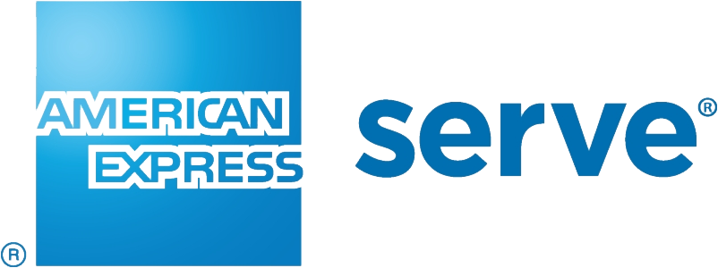

For almost 15 years I have been fortunate to have a career that has allowed me to:
- Design aesthetically pleasing Dashboards with meaningful KPIs
- Work on back-end Transaction Processing systems for American Express
- Create aesthetic corporate style guides establishing principles for consistency in colors, typography, imagery, and more
- Build scalable cloud-based Invoicing systems for Deloitte
- Design frameworks for cohesive UI controls
- Contribute to ecommerce functionality on FreightCenter.com
- Design countless web pages and logos
- Automate server deployments and back-end processes
With that said, I would like to give you more of a glimpse into some of those past projects, and how that relevant experience could add value to your organization.
